The slide of the lecture is on the left, the same figure on the right, computed in the browser from the same data. The ▶ button moves the parameter step by step.
What Can Machine Learning Predict in Finance? · A Minimal Machine Learning Toolbox · Features: Fractional Differencing and Its Pitfall · Labels: What Exactly the Model Learns · Honest Validation · Case Study: Predicting the S&P 500 · Selection and Backtest Overfitting · Machine Learning for Inference · Research Frontier: Structure before Flexibility
What Can Machine Learning Predict in Finance?
What Is Predictable? Direction vs. Risk
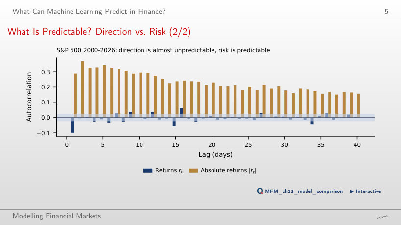
Answer
They are large and persistent: 0.29 at lag 1 and 0.16 at lag 40, all 40 above the ±0.024 band. Direction is almost unpredictable, risk is predictable; this is why ML is most useful for volatility, risk and liquidity.
A Minimal Machine Learning Toolbox
LASSO Regularisation Path
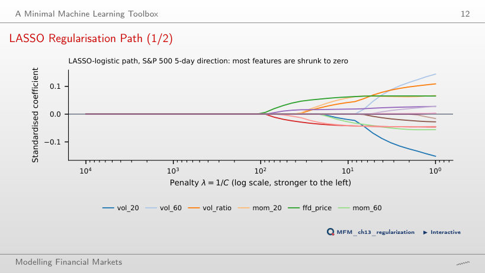
Answer
The FFD log price (ffd_price), i.e. a scaled price level. At weak penalties the volatility features have the largest coefficients, but all coefficients stay below 0.16 in absolute value. In purged CV, every λ at which at least one feature enters gives an AUC between 0.477 and 0.485, below 0.5.
Features: Fractional Differencing and Its Pitfall
The ADF Statistic Along d: S&P 500
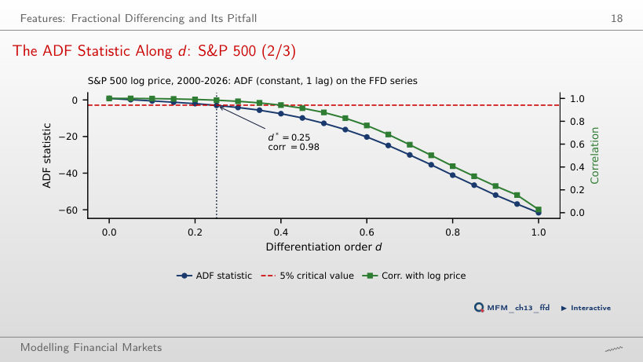
Answer
The test does not show it. With 34 lags chosen by AIC, the ADF statistic is −0.72 and does not reject. The correlation with the log price is 0.98 and the truncated weights sum to 0.178: the series contains a scaled random walk.
Labels: What Exactly the Model Learns
Triple Barrier: S&P 500 in 2022
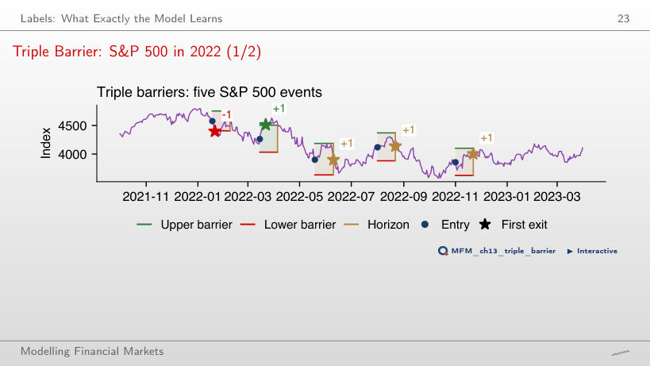
Answer
No. They end at the vertical barrier, after 15 days, above the entry level, and the sign rule labels them +1. Only the March event reaches the profit barrier; the January event hits the stop-loss (−1).
Honest Validation
Purged K-Fold with Embargo
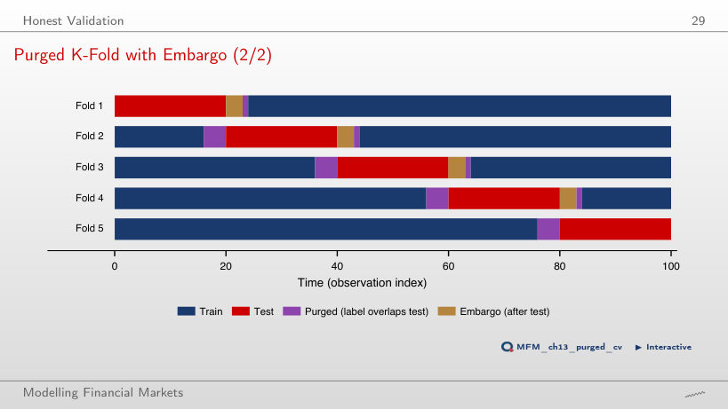
Answer
h = 4 before the block, whose labels end inside the test set, and max(h, e) = 4 after it. The embargo adds something only if e > h.
Leakage Experiment: Nothing to Predict
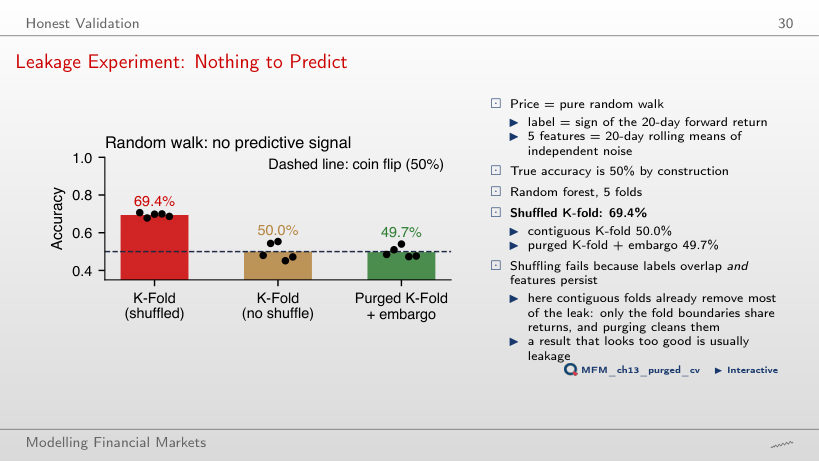
Answer
The 20-day labels overlap and the features are persistent, so shuffling puts nearly identical days in training and in test. Contiguous folds give 50.0%, purging and embargo 49.7%. With h = 2, shuffled K-fold gives 49.9%; with h = 60 it reaches 84.5%.
Case Study: Predicting the S&P 500
Model Comparison: Fold Means
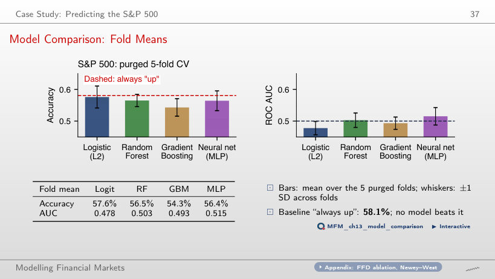
Answer
No. The always-"up" benchmark has 58.1%. The logit predicts "up" on 98.3% of the days (TP = 3,572, FP = 2,591), so it has learnt the majority rule. The fold-mean AUCs lie between 0.478 and 0.515, close to 0.5.
Walk-Forward Backtest: Results
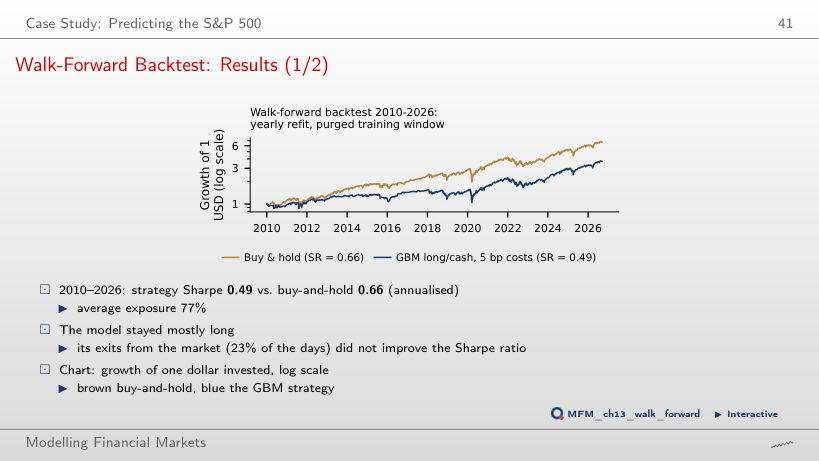
Answer
0.66. The mean exposure of the strategy is 77%. The difference, −0.17, has p = 0.073 (Ledoit–Wolf HAC test): there is neither evidence of skill nor significant evidence that the strategy is worse.
Selection and Backtest Overfitting
The Best of N Zero-Skill Strategies
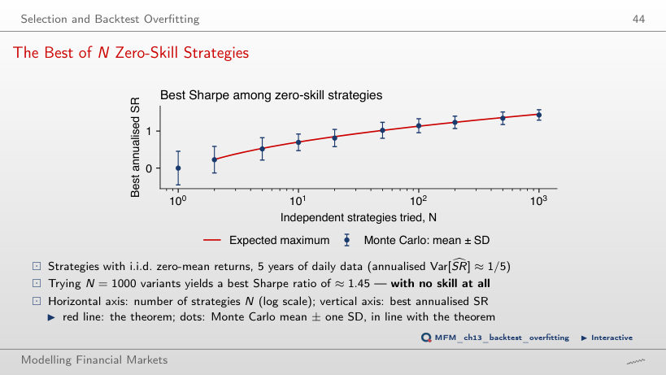
Answer
About 1.45: the False Strategy Theorem gives 1.46 and the mean of the 200 simulations is 1.43. The value rises with N and falls with the sample length, because the standard deviation of the annualised SR is √(1/5) ≈ 0.45.
In-Sample (IS) vs. Out-of-Sample (OOS): Bitcoin Grid Search
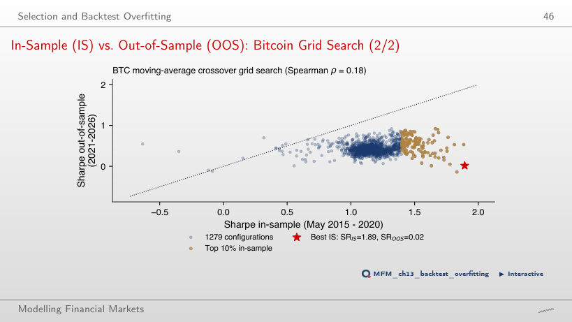
Answer
0.02. The Spearman rank correlation between in-sample and out-of-sample SR is 0.18. The median out-of-sample SR of the top 10% in-sample rules is 0.55, against 0.42 for all rules: the family of trend rules contains information, but the selected optimum reflects noise.
Machine Learning for Inference
Worked Example: Does the VIX Predict S&P 500 Returns?
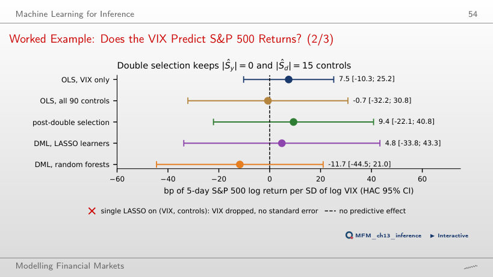
Answer
The 15 controls that predict log VIX absorb part of its variation, leaving d_t with less variation of its own. Double selection gives 9.4 [−22.1, 40.8]. All intervals contain zero: the data do not allow a conclusion.
Research Frontier: Structure before Flexibility
Deep Learning in Asset Pricing: Out-of-Sample Sharpe Ratios
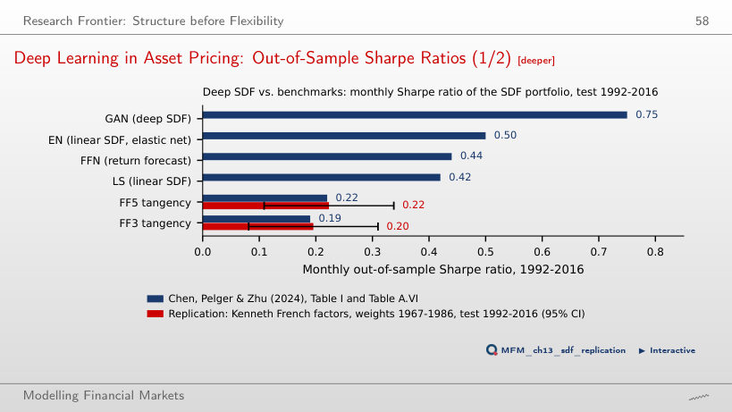
Answer
0.22 over 1992–2016, with 95% interval [0.11, 0.34]; the paper also reports 0.22. GAN has 0.75 and the regularised linear SDF (EN) 0.50, above the FFN forecasting network (0.44): the no-arbitrage structure matters more than flexibility.
S&P 500 and VIX: daily closes, January 2000 – September 2026; Bitcoin: daily closes from September 2014; EODHD prices. Fama–French factors: Kenneth French Data Library. Sharpe ratios of the SDF models: Chen, Pelger and Zhu (2024), Table I and Table A.VI.